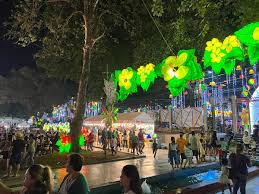
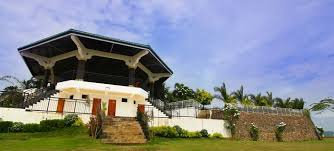
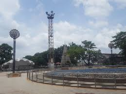
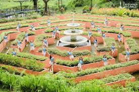
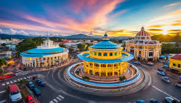

Top Parks to Visit

🌿 Unity Park Dao, Pagadian – Lush greenery and serene walking trails.

Plaza Luz Pagadian – Breathtaking sunsets and calm waves.

🌊 Pryce Garden Pagadian – Perfect for snorkeling and kayaking.

🌅 Carta Pagadian – Explore vibrant coral reefs and marine life.

🏝️ Eco Farm Zamboanga del sur– Relax with swaying palm trees and hammocks.

🌴 Rotond Pagadian – Secluded spot with golden sands.